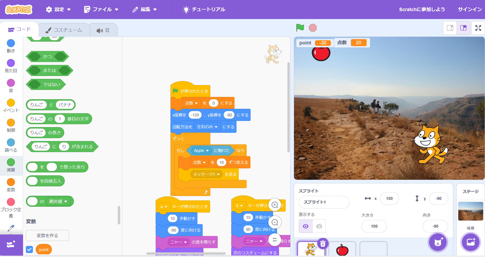

1-2 ゲーム

1.内容
リンゴを集めるゲームを作成した。自機がりんごに触れたとき、点数が増えるようながゲームを作成した。また、自機がりんごに触れた
時、リンゴのテクスチャを消すプログラムも作成し、りんごが自機に触れたことを分かりやすくした。
2.感想
りんごをとれなかったときにHPが減るようなプログラミングを作成しようとしたが、うまくいかなかった。端に触れたときに、変数poit
を-10するプログラムだと、端にずっと当たってしまっている判定になってしまい、HPがすぐにへってしまった。その後、試行錯誤し、
改良したプログラミングを作成したが、うまくいかなかず、とても悔しかった。次、同じようなプログラミングを作るときまでに作れるように
なろうと思った。